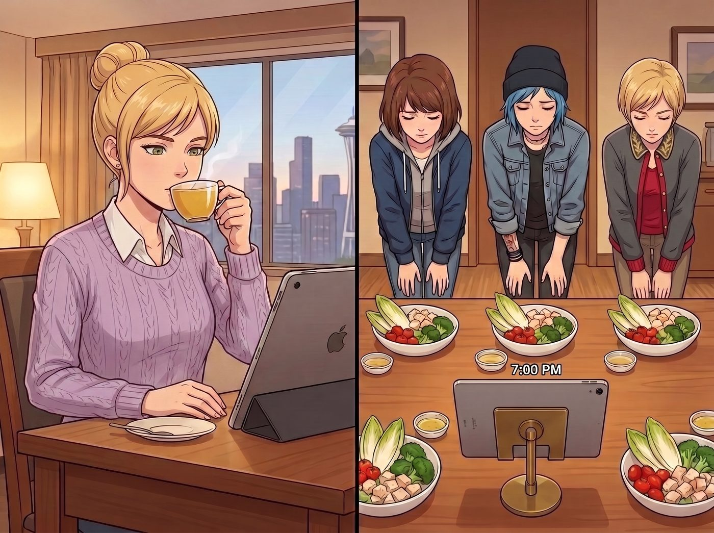

遠程審判庭

晚上七點整，長木桌正中央架起了一台立在黃銅支架上的 iPad。
屏幕那端，剛結束全天志工研討會的 Kate 換上了舒適的淡紫色針織衫，手裡捧著一杯熱洋甘菊茶，端坐在西雅圖飯店的書桌前。屏幕這端，三個人雙手放在膝蓋上，宛如在教導主任面前等待審判的小學生，整整齊齊排成一列。
她們面前各自擺著一隻標準深口白瓷碗，裡面裝著 Kate 遠程欽定的「悔過晚餐」——毫無油水的綠色苦苣、小番茄、水煮雞胸肉丁，以及幾片水煮西蘭花，旁邊只有一小碟無油檸檬油醋汁。
一、大天使的在線遠程巡檢
「Chloe，請把妳藏在桌子底下的起司多力多滋拿上來。」Kate 透過高清鏡頭，眼神精準地掃過屏幕邊緣。
Chloe 剛伸向褲兜的手猛地一僵，悻悻地把一包壓得扁扁的黃金芝士三角脆片拍在桌上，抓著藍髮哀嚎：「老天爺……妳在西雅圖開天眼了嗎？！這玩意兒連包裝都沒拆！」
「因為妳咀嚼空氣的頻率出賣了妳哦，」Kate 溫柔地笑了笑，隨後目光轉向中間，「Max，妳手裡那支沾滿焦糖糖漿的叉子是怎麼回事呢？」
Max 像被電流擊中一樣，慌亂地把叉子藏到身後，黑框眼鏡滑到鼻尖，小聲嘟囔：「我只是……只是想在水煮雞胸肉上加零點一克的楓糖提味……」
「不行哦，今晚嚴禁任何形式的焦糖化或者高溫美拉德反應。」Kate 認真地搖了搖頭，最後將視線落在名媛身上。
Victoria 坐得筆挺，優雅地捏著銀叉，試圖維持最後的尊嚴：「Kate，我必須重申，中午使用丁烷噴槍純屬 Price 的個人野蠻行為。我作為受害者，甚至損失了一隻限量版骨瓷盤，我應該享有食用正常熱食的特權。」
Kate 眨了眨眼，指了指視頻角落：「可是 Victoria，中午視頻裡指揮大家在立柱頂端放置生蛋黃以增強構圖感的人，好像是妳的聲音呢。」
Victoria 的嘴角劇烈抽搐了一下，默默閉上嘴，低頭叉起了一塊毫無味道的水煮西蘭花塞進嘴裡，神情冷峻得像在吞下一顆螺栓。
二、苦行僧式的嚼草修羅場
整個二號車廂陷入了一種極其詭異的咀嚼聲大合奏。
Chloe 嚼著苦苣葉，表情痛苦得宛如在生吞砂紙，嘴裡含糊不清地抗議：「這不是食物……這是在給羊反芻做預處理……老娘明天去車床切削金屬時絕對會因為低血糖把卡盤擰反的！」
Max 一邊機械地嚼著雞胸肉，一邊假裝認真調整 iPad 的麥克風，試圖趁 Kate 低頭喝茶的空檔，把幾塊小番茄偷偷撥到 Chloe 的碗裡。結果剛一伸手，Kate 就抬起頭，Max 只能硬生生轉向把番茄送進自己嘴裡，酸得五官擠作一團。
Victoria 閉著眼睛，切著乾柴的水煮雞肉，一邊嚼一邊深呼吸催眠自己：「這不是水煮雞肉……這是低溫慢煮阿爾卑斯散養走地雞佐地中海初榨檸檬精萃……」
Chloe 噗嗤一聲笑噴出來：「大股東，妳乾脆催眠自己在吃黃金算了，至少能補鐵！」
三、天使的終極特赦
看著三人如臨大敵、滿臉生無可戀地把蔬菜沙拉吃到見底，視頻那端的 Kate 終於忍不住捂著嘴輕輕笑了起來。
她從桌旁拿起手機，在屏幕前晃了晃：「好啦～看在大家這麼聽話、而且中午沒有真正引發火警的份上，我剛才用外賣 App 給你們訂了波特蘭東區那家店的手工藍莓冰淇淋華夫餅哦。大概十五分鐘後會送到門口～」
長木桌前的三個人瞬間原地復活！
「哇啊啊啊！大天使萬歲！！」Chloe 激動得差點把 iPad 抱起來親一口屏幕。
Max 興奮地握拳歡呼，而 Victoria 則迅速用紙巾擦了擦嘴角，推了推眼鏡，雖然極力壓抑著上揚的嘴角，但眼底的光彩根本掩飾不住：「……不得不說，Marsh，妳在危機公關後的甜點補償機制，處理得非常符合現代企業管理哲學。」
視頻裡的 Kate 眉眼彎彎，笑得溫柔無比：「吃完甜點要記得把盤子洗乾淨哦，還有——在我週三回來之前，絕對不准再碰任何噴槍和焊條了，知道嗎？」
「遵命，長官！！」三個人異口同聲地對著屏幕大聲保證。
夜風吹過鐵道花園，車廂外的燈塔壁畫在月光下泛著沉穩的藍色金屬光澤。在等待華夫餅送達的片刻寧靜中，這座充滿了歡笑、狼狽與愛意的小小工坊，在遠程的守護下，迎來了初秋夜色裡最香甜的救贖。